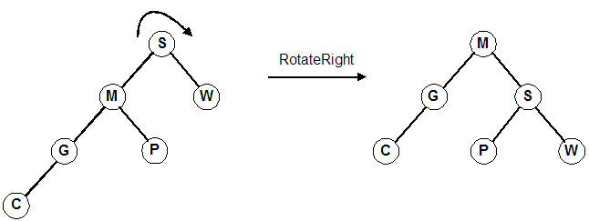

Trees (Part 2)
Rotating nodes (review)
- The primary operation used in balancing BSTs is the rotate operation.
- The idea is to rotate the tree around a particular node's position. (Pivot point)
- There are two types of rotations: left and right.
- Promoting a node is the same as rotating around the node's parent. (There is no direction, promotion is unambiguous.)
- Note an important property of rotation: after the rotation, the sort order is preserved. This is important, because the resulting tree must
still be a BST.
Rotate right around the root, S. (Same as promoting M)

Rotate left twice around the root. First around 1, then around 3.
(Same as promoting 3 and then 6)

Using the defintions from before. Note the parameter to each function.
| Rotating a tree right | Rotating a tree left |
|---|
void RotateRight(Tree &tree)
{
Tree temp = tree;
tree = tree->left;
temp->left = tree->right;
tree->right = temp;
}
|
void RotateLeft(Tree &tree)
{
Tree temp = tree;
tree = tree->right;
temp->right = tree->left;
tree->left = temp;
}
|
Follow the four lines of code in this example.
1. temp = Tree; // temp ===> S
2. tree = temp->left; // Tree ===> M
3. temp->left = tree->right; // temp->left ===> P
4. tree->right = temp; // tree->right ===> S


Adjusting the diagram:

One type of balanced tree is the AVL tree. (Two Russian Mathematicians, Adel'son-Vel'skii and Landis).
- An AVL tree is essentially a balanced binary search tree (BST).
- The insert and delete operations are more complicated (need to maintain the balanced property).
- Still, fairly simple to understand and implement.
- Worst case for searching is now O(lg N), which is very good.
This next example shows how you can traverse back up the tree without having a pointer to your
parent and without using recursion. (You could use recursion to achieve the same effect, of course.)
Pseudocode for Insertion:
- Insert the item into the tree using the same algorithm for BSTs. Call this new node x.
- While traversing the tree looking for the appropriate insertion point for x, push the
visited nodes onto a stack. (Actually, you are pushing pointers to the nodes.) It is not necessary
to push the node onto the stack.
- Check if there are more nodes on the stack.
- If the stack is empty, the algorithm is complete and the tree is balanced.
- If any nodes remain on the stack, go to step 3.
- Remove the top node pointer from the stack and call it y.
- Check the height of the left and right subtrees of y.
- If they are equal or differ by no more than 1 (hence, balanced), go to step 2.
- If they differ by more than 1, perform a rotation on one or two nodes as described below.
After the rotation(s), the algorithm is complete and the tree is balanced.
Pseudocode for Balancing:
- Check the height of the left and right subtree of y to find which
is greater.
- This psuedocode will assume that the right subtree is greater. (The algorithm is
symmetric, so you should be able to modify it slightly for the case when the height of
the left subtree is greater.)
- For clarity, we refer to the right child of y as u. We'll refer
to the left child of u as v, and the right child of
u as w.
- Determine the height of the subtree rooted at v and the height of the subtree
rooted at w.
- If h(v) is greater, perform a right rotation about u and a
left rotation about y.
- Else perform a left rotation about y. (This handles
the case when h(v) and h(w) are equal. The reason for this is that it is
probably more efficient to do a single rotation, rather than a double rotation, when possible.)
- The tree is now balanced after an insertion.
Removal:
Removing an element is very similar to the insertion algorithm. While we are searching for
the node to delete, we are pushing the visited nodes onto a stack. The only difference is
that at step 4b above, we modify it to say this:
- If they differ by more than 1, perform a rotation on one or two nodes as described below.
After the rotation(s), goto to step 2 (in the insertion pseudocode).
Example:
| Given this tree: | | After inserting 7 | | On the stack |
 | |  | | 8
9
5
|
| Balanced subtrees | | Balanced subtrees | | Unbalanced subtrees |
|---|
 | |  | |  |
Since h(v) is greater than h(w), perform a right rotation about u (promote v)
and a left rotation about y (promote v again):


Example of deleting from an AVL tree that requires multiple rotations.
Self Check: Draw the AVL tree at each step as you insert these values: 5 2 9 8 12 15 17 19 25 (as letters: EBIHLQSY)
Partial implementation examples:
// Client calls this instead of InsertItem
void InsertAVLItem(Tree &tree, int Data)
{
stack<Tree *> nodes;
InsertAVLItem2(tree, Data, nodes);
}
// Auxiliary function with the stack of visited nodes
void InsertAVLItem2(Tree &tree, int Data, stack<Tree*>& nodes)
{
if (tree == 0)
{
tree = MakeNode(Data);
BalanceAVLTree(nodes); // Balance it now
}
else if (Data < tree->data)
{
nodes.push(&tree); // save visited node
InsertAVLItem2(tree->left, Data, nodes);
}
else if (Data > tree->data)
{
nodes.push(&tree); // save visited node
InsertAVLItem2(tree->right, Data, nodes);
}
else
cout << "Error, duplicate item" << endl;
}
void BalanceAVLTree(stack<Tree *>& nodes)
{
while (!nodes.empty())
{
Tree *node = nodes.top();
nodes.pop();
// implement algorithm using functions that
// are already defined (Height, RotateLeft, RotateRight)
}
BST/AVL program showing balance factors and node counts.
- Each node can contain 1 or 2 keys.
- Each node has 2 or 3 children, hence 2-3 tree.
- The keys in the nodes are ordered from small to large.
- All leaves are at the same (bottom most) level, meaning we always add at the bottom.
- Balance is maintained after every insertion using a very simple balancing algorithm. (Splitting nodes)
- Searches are O(lg N) in worst case.
- Number of splits in worst case is O(lg N), but about O(1) on average.
A possible node structure for a 2-3 search tree:
struct Node23
{
Node23 *left, *middle, *right;
Key key1, key2;
};
| 2-node (not showing empty) | | 2-node (showing empty) | | 3-node |

|
|

|
|

|
An example using bottom-up balancing (splitting):

Inserting D into the tree causes the leftmost node to grow from a 2-node to a 3-node:

- Adding O to the tree is slightly more complicated
- It causes the 3-node M,N to overflow to M,N,O
- Split the node into two 2-nodes, M and O
- Pass up the middle, N
| 4-node, not valid in 2-3 tree | | Three 2-nodes |
|---|

|
→ |

|
- Passing up N causes the 3-node L,P to overflow to L,N,P
- Split the node into two 2-nodes, L and P
- Pass up the middle, N

- Passing up N causes the 2-node J to become a 3-node, J,N
- No more overflow/splits

What will the tree look like after inserting A? After inserting I?
Diagrams
In the worst case, we have to traverse the entire tree twice. (Down to insert, up to balance)
- Similar to 2-3 trees
- Each node can contain 1, 2, or 3 keys.
- Each node has 2, 3 or 4 children, hence 2-3-4 tree.
- Restated: Every node has at most 4 children.
- All external nodes (NULL nodes) are at the same depth.
- 2-3-4 trees form the basis for B-trees (1,000 children per node), which are used extensively in large data sets.
- Number of splits in the worst-case is O(lg N). When is worst-case?
- Number of splits on average is very few.
Modified algorithms can produce better efficiency (e.g. splitting nodes on the way down instead of splitting from
the bottom up.)
A 2-node attached to a 4-node becomes a 3-node attached to two 2-nodes:

A 3-node attached to a 4-node becomes a 4-node attached to two 2-nodes:

- Splitting a 4-node into two 2-nodes preserves the number of child links (4 links)
- Changes do not have to be propagated. Change remains local to the split.
- By splitting nodes on the way down, we can guarantee that each node we pass through is not a 4-node.
- When we reach the bottom, we will not be on a 4-node.
- This means we only traverse the tree once when inserting/balancing.
- When the root becomes a 4-node, we split it into a 2-node pointing to two 2-nodes:

- Splitting the root is what causes the tree to grow one level. (This is the only way to grow the tree)
Deletion
Deleting an element in a 2-3-4 tree (assumes we will grow nodes on the way down.)
The idea is intuitive, but writing the algorithm down in English seems to make it look/sound harder than it is.
Again, when dealing with trees, there are different cases. Here, there are 3 different cases:
- If the element, k is in the node and the node is a leaf containing at least 2 keys, simply remove k from the node.
- If the element, k is in the node and the node is an internal node perform one of the following:
- If the element's left child has at least 2 keys, replace the element with its predecessor, p,
and then recursively delete p.
- If the element's right child has at least 2 keys, replace the element with its successor, s,
and then recursively delete s.
- If both children have only 1 key (the minimum), merge the right child into the left child and include
the element, k, in the left child. Free the right child and recursively delete k from the
left child.
- If the element, k, is not in the internal node, follow the proper link to find k.
To ensure that all nodes we travel through will have at least 2 keys, you may need to perform one
of the following before descending into a node. Then, you will descend into the corresponding node.
Eventually, case 1 or 2 will be arrived at (if k is in the tree).
- If the child node (the one being descending into) has only 1 key and has an immediate sibling
with at least 2 keys, move an element down from the parent into the child and move an element from
the sibling into the parent.
- If both the child node and its immediate siblings have only 1 key each, merge the child node
with one of the siblings and move an element down from the parent into the merged node.
This element will be the middle element in the node. Free the node whose elements were merged into the other node.
Deletion example
Invented by Guibas and Sedgewick in 1978. It is the data structure used
for implementing maps and sets in C++'s Standard Template Library (STL) and also
used to implement the Completely Fair Scheduler in Linux.
- A BST is a form of 2-3-4 tree in that all nodes are always 2-nodes.
- Red-Black trees are BSTs (all nodes 2-nodes)
- Red-Black trees are used to represent 2-3-4 trees.
- The "-3-4" nodes of the 2-3-4 tree are "encoded" in the nodes.
- This encoding is represented in the node as the node being either RED or BLACK.
Advantages of Red-Black trees
- Red-Black trees are BSTs, so the standard search methods for BSTs work as-is
- They correspond directly to 2-3-4 trees, so they are always balanced.
- This means that searching, inserting, and re-balancing are all O(lg N). Sweet!
- The insertion/rebalancing algorithm is fairly simple. However, coming up with
the algorithm is not.
Properties of Red-Black trees
- A Red-Black tree is a binary search tree.
- Each node has an additional attribute, a color, which is either RED or BLACK.
- A node in a Red-Black tree also contains a link (back pointer) to the parent, which
helps to keep the algorithms simpler.
- A possible data structure for a node of a Red-Black tree could be:
enum COLOR { rbRED, rbBLACK };
struct RBNode
{
RBNode *left;
RBNode *right;
RBNode *parent;
COLOR color;
void *item;
};
Note that the terms "RED" and "BLACK" are completely arbitrary. The inventors could have
simply used "GREEN/YELLOW", "A/B", "TRUE/FALSE", "TOM/JERRY". These terms are simply tags to distinguish
between the two types of nodes.
A Red-Black tree is a Binary Search Tree with the additional properties of color:
- Each node is marked as RED or BLACK.
- Newly inserted nodes are marked as RED
- NULL nodes (empty children) are marked as BLACK.
- If a node is RED, then its children must be BLACK.
- This means that two RED nodes are never adjacent on a path.
There is no limit on the number of BLACK nodes that may appear in sequence.
- Every path from a node to any of its leaves contains the same number of BLACK nodes.
- The root of the tree is BLACK. Technically, the root may be RED,
but to keep the algorithm simple and ensure that everyone's trees look identical, we'll require the root to be BLACK.
Another way to state this is to focus on these two conditions:
The RED condition:
Each RED node has a BLACK parent.
The BLACK condition:
Each path from the root to every external node contains exactly the same number of BLACK nodes.
Mapping 2-3-4 Trees into Red-Black Trees
The implementation complexity with Red-Black trees arises when an insertion destroys the Red-Black properties that must
hold for Red-Black trees. After such an insertion, we must restore the Red-Black properties as above.
- The specific condition that is violated is when an insertion causes two RED
nodes to be adjacent.
- This is because newly inserted nodes are always marked as RED,
and if the parent is RED, we have
a "situation."
First some terminology about our family tree:

We will use these letters in our diagram:
- C = Child
- P = Parent
- G = Grandparent
- U = Uncle
Situation #1
- Child and Parent are RED and Uncle is BLACK
- Grandparent must be black because tree was valid Red-Black before insertion
- Two possible orientations with the grandparent:
Orientation #1 (zig-zig)

Questions you should be able to reason about:
- What color is the root of subtrees 1, 2, and 3?
- What is the color of G's parent?
- What color is the root of subtrees 4 and 5?
- How does the number of black nodes along any path in G's left subtree
compare with the number of black nodes along any path in G's right subtree?
Transformation:
- Rotate Grandparent (promote parent) (G becomes child of P)
- Set Grandparent to RED and Parent to BLACK
- Changes were local so we are done. (Doesn't affect nodes above.)
Orientation #2 (zig-zag)

Transformation:
- Rotate Parent left, then rotate Grandparent right (promote node, promote node)
- Set Grandparent to RED and Child to BLACK
- Changes were local so we are done. (Doesn't affect nodes above.)
Situation #2
- Child and Parent are RED and Uncle is RED
- Grandparent must be black because tree was valid Red-Black before insertion
- Two possible orientations with the grandparent:
Orientation #1 (zig-zig)

Transformation:
- Set Grandparent to RED, set Parent and Uncle to BLACK (flip colors of the 4-node)
- Changing G to RED may affect G's parent, so
we need to continue up the tree
Orientation #2 (zig-zag)

Transformation:
- Set Grandparent to RED, set Parent and Uncle to BLACK
- Changing G to RED may affect G's parent, so
we need to continue up the tree.
Pseudocode for insertion into a Red-Black tree.
Diagrams and pseudocode in a PDF document.
Given the Red-Black tree below, insert the values 4, 6, 9, and 10 into it, re-balancing and re-coloring as
necessary.

Resulting trees from inserting the values above. (Letters: KBNAGOEH DFIJ)
Draw the resulting Red-Black tree from inserting the letters: E A S Y Q U T I O N
Resulting tree from inserting the letters above.
Red-Black Demo (Empty)
Red-Black Demo (Populated)
| 2-3-4 Tree: 1 2 3 4 5 6 7 8 | |
Red-Black Tree: 1 2 3 4 5 6 7 8 | |
BST: 1 2 3 4 5 6 7 8 |
 | |
 | |
 |
|
| 2-3-4 Tree: 8 7 6 5 4 3 2 1 | |
Red-Black Tree: 8 7 6 5 4 3 2 1 | |
BST: 8 7 6 5 4 3 2 1 |
 | |
 | |
 |
|
| 2-3-4 Tree: 2 7 5 6 1 4 8 3 | |
Red-Black Tree: 2 7 5 6 1 4 8 3 | |
BST: 2 7 5 6 1 4 8 3 |
|---|
 | |
 | |
 |
Highlights of Red-Black Trees:
- Red-Black trees are BSTs, so standard BST search algorithms work as-is.
- They correspond directly to 2-3-4 trees, so they remain (approximately) balanced after inserting.
- There is less work during searches because no balancing is done (split on the way down). We only balance if we add a node.
- The insertion/rebalancing algorithm is fairly simple.
- Searching, inserting, and re-balancing are all O(lg N).
- Red-Black trees ensure the underlying 2-3-4 tree is balanced. This means:
- The corresponding 2-3-4 tree is exactly balanced and requires at most lg N comparisons to reach
a leaf. The worst case complexity, then, is O(lg N).
- The Red-Black tree is approximately balanced and requires at most 2 lg N comparisons to reach
a leaf. The worst case complexity, then, is O(lg N). On average, the number of comparisons is
1.002 lg N.
Red-Black Tree Program
BST/AVL program
Self-check:
Insert the letters ABCDEFGHIJKLMNOPQRSTUVWXYZ into a 2-3-4 tree and compare it to a red-black tree
with the same data. What do you see?
Red-Black vs. AVL
According to Ben Pfaff (creator of GNU libavl) in
an excerpt from Google Groups on the topic
"Red Black Trees Vs Skip Lists"
"In my own tests, the performance of AVL trees versus red-black
trees depends on the input data. When the input data is in
random order, red-black trees perform better because they expend
less effort trying to balance a tree that is already well
balanced. When the input data is pathological (e.g. in
increasing order), AVL trees perform better because they produce
trees with smaller average path length. The choice between AVL
and red-black trees should therefore be made based on
expectations of typical input data."
Another way to look at it is if the data is read only (e.g. a dictionary, no inserts/deletions),
using an AVL tree will result in faster lookups because it will be guaranteed to be exactly balanced.